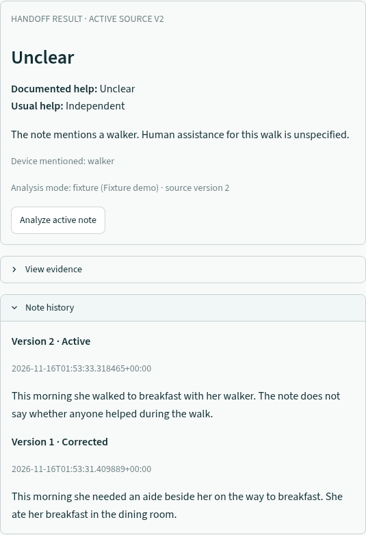

Elena: more help than usual
Documented staff supervision is compared with Elena’s confirmed independent breakfast routine.

Ruth: matches usual routine
The same note matches Ruth’s confirmed supervision baseline. The baseline changes the comparison.

Exact evidence, two separate sources
The highlighted quote comes from the active note. The usual-assistance description and confirmation date stay separate.

New source, preserved history
The walker-only replacement leaves human help unspecified. Version 2 is Active; version 1 stays Corrected in history.